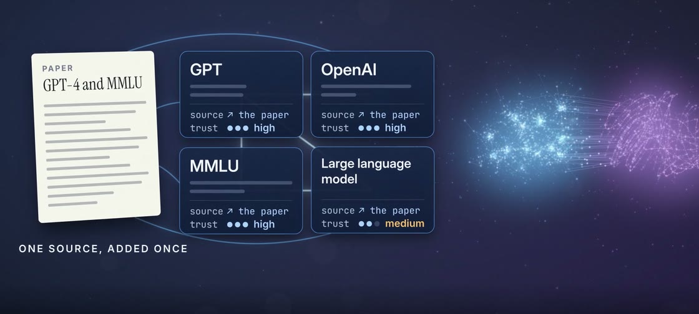
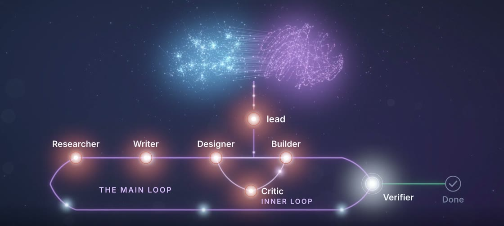
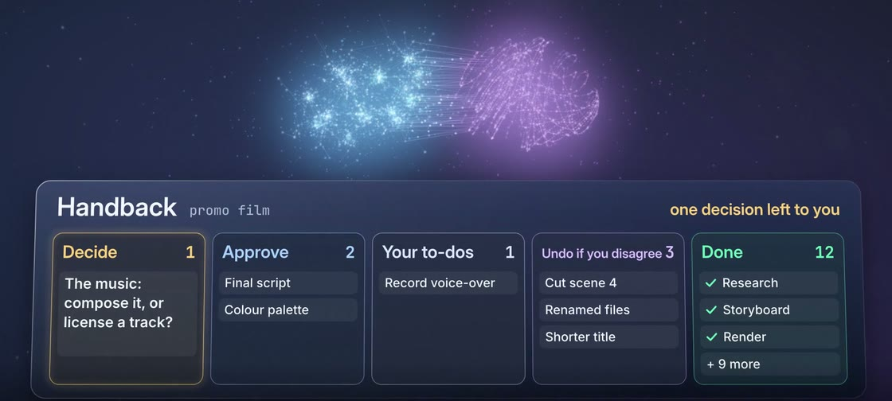
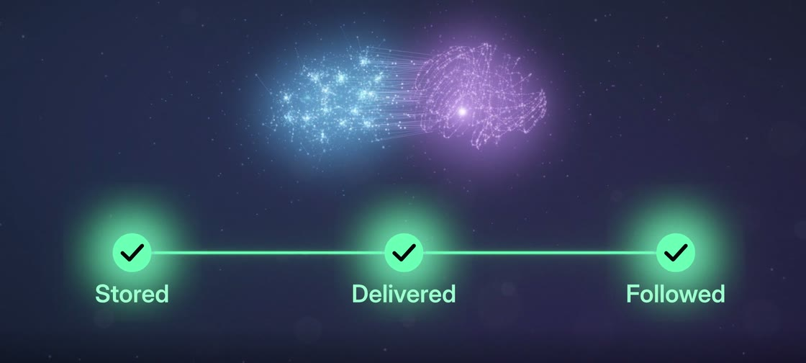
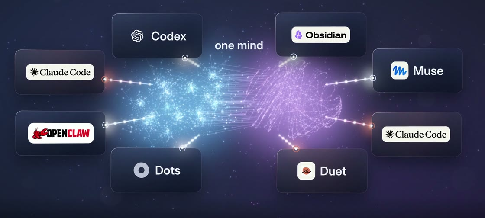
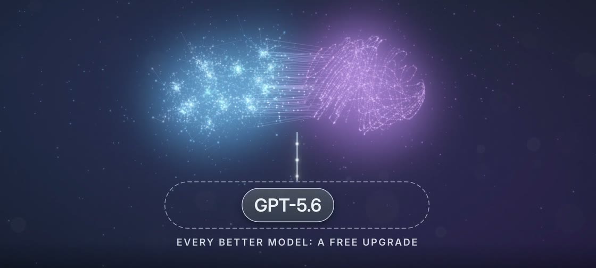

aiMyth
Build your second self.
aiMyth. Build your second self.
01 About
Mingjun (Jerry) Zhang
DPhil student in Computer Science, University of Oxford (Kellogg College)
My DPhil research trains language models to give an answer together with a calibrated confidence, so that they know when to defer. I am supervised by Prof. Ani Calinescu and Prof. Michael Wooldridge, and I am a member of the Large Agent Collider.
-
1st
in the School of Computing, 2024
Australian National University. Bachelor of Advanced Computing (R&D) (Honours), First Class.
-
1st
among all international students
Terrell International Scholarship, 2022, ANU.
-
2024 ANU
University Medal
And the Erin Brent Computer Science Prize: top graduate in Engineering, Computing & Cybernetics.
-
2026 Cosmos Institute
Cosmos x FIRE Grant
AI and Truth-seeking.
-
4.8/5.0
student feedback at Oxford
Class tutor and marker for Artificial Intelligence. Before that, Senior Tutor at ANU: more than 300 students.
-
Poster ACM AsiaCCS 2025
When Models Speak Too Much: Privacy Leakage on Large Language Models
02 aiMyth
aiMyth (open-sourced as SecondSelf) builds your second self by giving your AI harness a “mind” of your own.
The mind is made of your knowledge, rules and lessons, kept in interconnected files stored on your own computer, and it can learn, improve, do tasks and organise teams of agents just as you would have done yourself, from whatever harness you already use, such as Claude Code.
Today it runs in Claude Code, and GPT models can join as subagents through the Codex CLI.
- v0.10
- released in November 2026
- June 2026
- in daily use since
- 100+
- GitHub stars
- Built alone
- from scratch
- arXiv
- preprint forthcoming
We believe that once everyone has the same strongest models and the same harnesses, what will set you apart is the mind you build.
Six moments from the film
Each one plays from that point.
-

1:06 You can see why. Every answer shows its sources and how far to trust them, and every rule keeps its reason. -

1:17 Big jobs get done even while you sleep. Hand over a job of any size, and aiMyth sets up the teams and workflows it needs, as you would yourself, and works through it within your rules. -

1:40 It strengthens you, never replaces you. It takes on the work and brings every real decision back to you. -

1:43 Tell it once. A correction you give today shapes every later job that needs it, including the work it hands to its teams. -

1:55 One mind behind every window. However many windows you open, with any agent in any tool, you always talk to the same mind. -

2:02 Every better model makes it stronger. Each better model, and each better Claude Code or Codex, is a free upgrade, and any part can be swapped for a better tool.
Some of these describe where aiMyth is going. What runs today lists what works now and where to check it.
Clone it, run the set-up, and start talking.
aiMyth comes as a folder of rules and skills that you clone onto your own computer and open in an AI coding agent. Released under the MIT License.
SecondSelf on GitHubgit clone https://github.com/HurricaHjz/SecondSelf.git
cd SecondSelf
bash setup.sh
03 Contact
Get involved
We are looking for people and support to take this further: research collaborators, internships, compute, funding, and anyone who wants to build their own mind on aiMyth and tell us what breaks.
It is --:-- in Oxford.